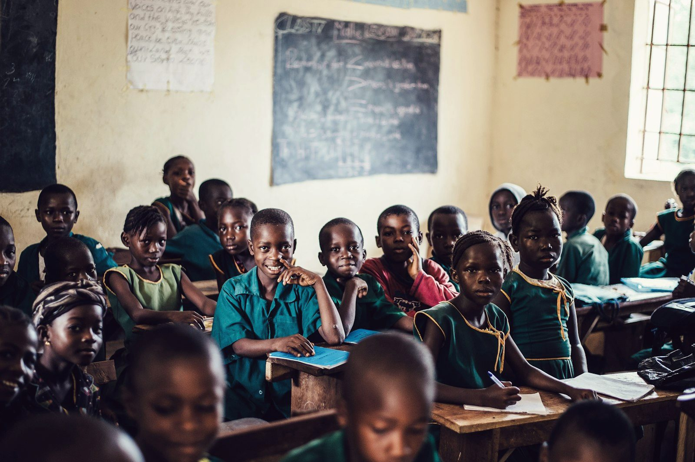
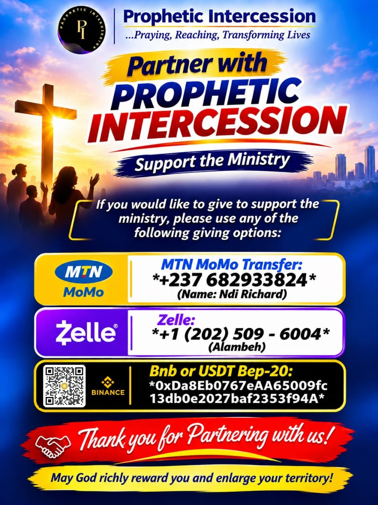

Completed


Who we are
About Us
Welcome to Prophetic Intercession — a house of prayer without walls. We are a community of intercessors who believe that prayer moves heaven and changes earth. From our Zoom altar, believers across Africa and the Americas gather to seek the face of God, hear His voice and stand in the gap for families, cities and nations.
But we don’t stop at prayer. What we receive on our knees, we carry out with our hands — into prisons, rural villages and the lives of children who need a family.
Learn moreOur Outreach
See all Supported
SupportedRural Missions
Standing with missionaries who carry the Gospel to remote, overlooked communities.
Learn more In progress
In progressOrphanage
Building a loving, Christ-centred home where orphaned children can grow and thrive.
Learn more
Future visionHospitals & Schools
Our next horizon: bringing healing and education to communities that need it most.
Learn more Host · Prophetic Intercessor
Host · Prophetic Intercessor
Ministry leadership
Founder & HostProphetic Intercessor
Called to the place of prayer, our founder carries a burden for revival and for people the world often forgets. Through Prophetic Intercession she gathers believers across nations to pray, then leads them out to reach prisoners, rural communities and orphaned children with the love of Christ.
Learn more
Our cry
“Wilt thou not revive us again: that thy people may rejoice in thee?”Psalm 85:6
Support the ministry
Partner with Prophetic Intercession
Every seed you sow fuels prayer, outreach to prisons and rural communities, and the orphanage we are building. Give from anywhere in the world.
MTN MoMoZelleBNB / USDT (BEP-20)
Give now
